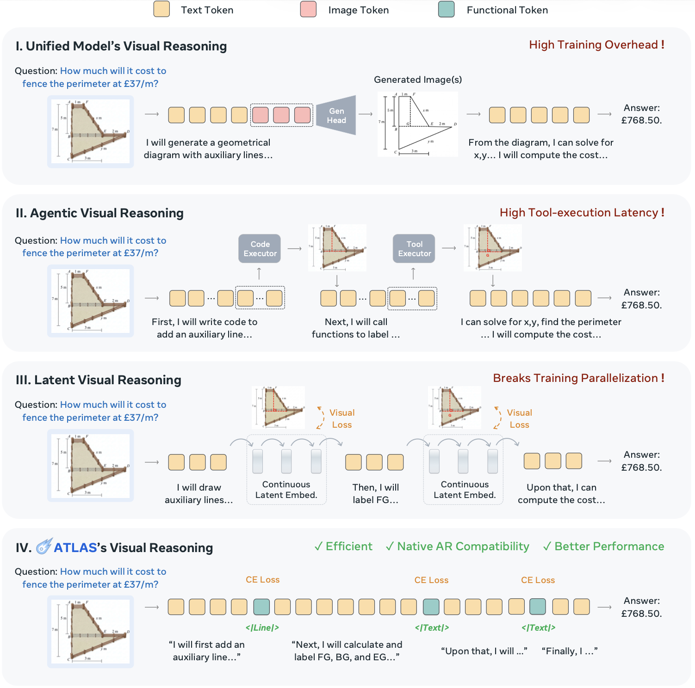
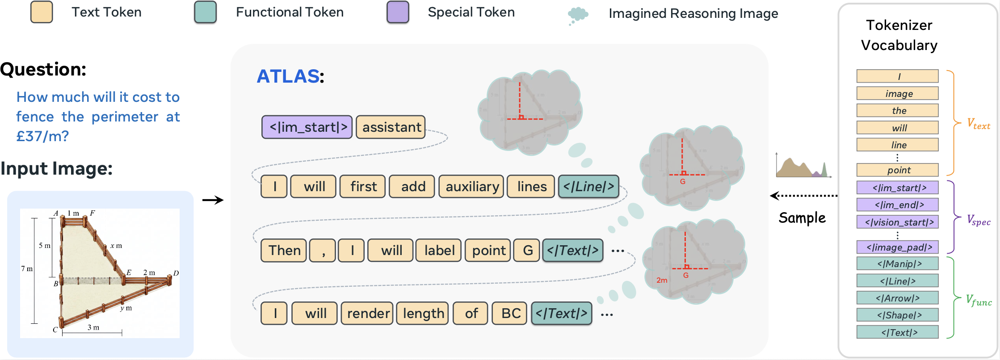
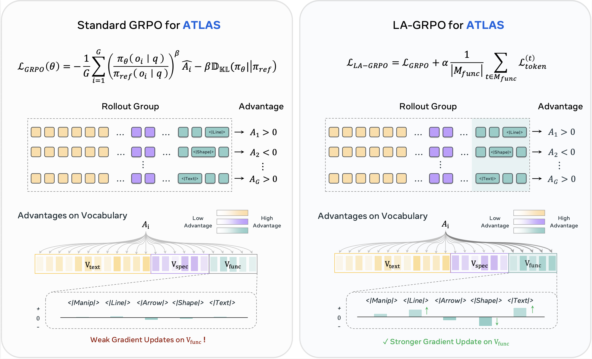
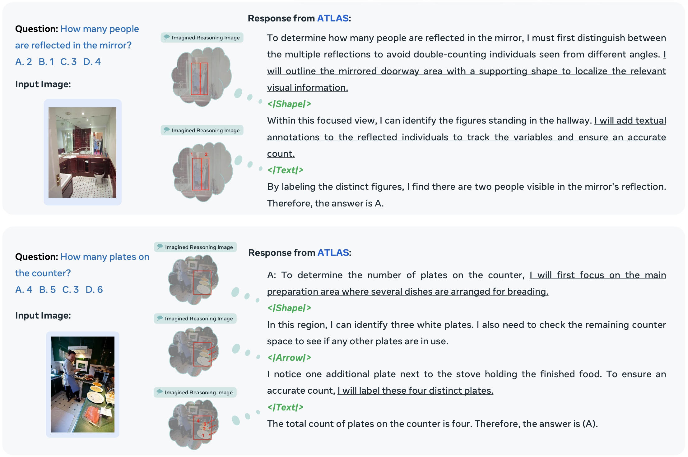
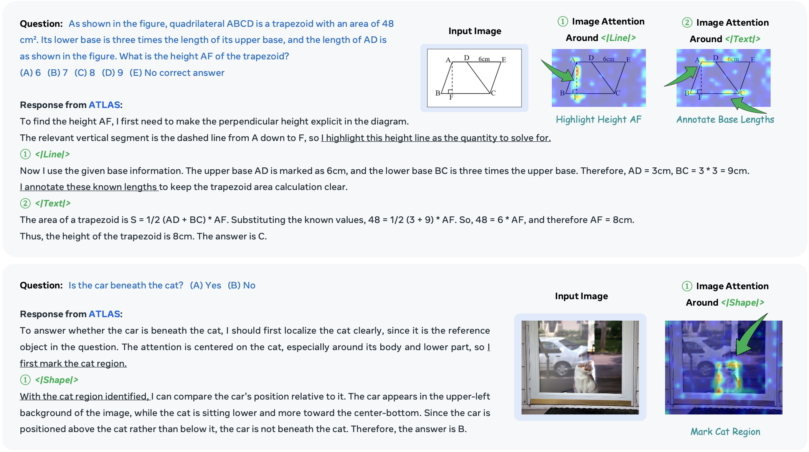

ATLAS: Agentic or Latent Visual Reasoning?
One Word is Enough for Both

ATLAS

LA-GRPO

Better reasoning, lower overhead
| Method | V* | WeMath | BLINK Avg. | Art. | Count. | Forensic. | IQ | Jigsaw | M-view | Spatial |
|---|---|---|---|---|---|---|---|---|---|---|
| Closed-source Models | ||||||||||
| GPT-4o | 62.8 | 50.6 | 61.0 | 82.9 | 49.2 | 79.5 | 31.3 | 55.3 | 59.4 | 69.2 |
| Claude-4-Sonnet | 15.2 | 63.0 | 49.9 | 61.5 | 59.2 | 35.6 | 30.0 | 53.3 | 47.4 | 62.2 |
| Gemini-2.0-Flash | 73.3 | 47.4 | 45.3 | 56.4 | 55.0 | 30.3 | 25.3 | 48.7 | 43.6 | 58.0 |
| Gemini-2.5-Pro | 79.1 | 71.3 | 74.6 | 85.5 | 78.3 | 89.4 | 43.3 | 85.3 | 50.4 | 90.2 |
| Standard VLMs | ||||||||||
| Qwen2.5-VL | 70.2 | 36.2 | 22.8 | 29.9 | 58.3 | 0.8 | 18.7 | 31.3 | 0.0 | 20.3 |
| LLaVA-OneVision-7B | 75.4 | 23.1 | 36.6 | 47.0 | 43.3 | 25.0 | 20.7 | 38.7 | 33.8 | 47.6 |
| MiniGPT-v2 | 35.6 | 11.0 | 32.8 | 43.6 | 13.3 | 24.2 | 20.3 | 34.7 | 48.9 | 44.8 |
| Gemma-3-27B | 62.3 | 31.7 | 32.1 | 42.7 | 37.5 | 21.2 | 16.0 | 33.3 | 31.6 | 42.7 |
| Unified Models | ||||||||||
| Anole | 25.4 | 24.7 | 16.4 | 31.6 | 25.0 | 11.7 | 14.3 | 2.0 | 3.0 | 27.3 |
| Bagel | 55.5 | 39.4 | 51.1 | 63.2 | 60.8 | 37.1 | 30.0 | 57.3 | 39.8 | 69.2 |
| Agentic Visual Models | ||||||||||
| Visual CoT | 44.5 | 28.6 | 44.4 | 47.0 | 57.5 | 25.0 | 20.7 | 52.7 | 44.4 | 63.6 |
| V-Thinker | 41.4 | 32.5 | 35.0 | 26.9 | 43.3 | 19.7 | 18.7 | 42.0 | 51.1 | 43.4 |
| VTS-V | 74.9 | 42.8 | 51.2 | 62.4 | 61.7 | 32.9 | 28.7 | 56.1 | 49.4 | 67.2 |
| Latent Visual Models | ||||||||||
| LVR | 77.5 | 41.2 | 49.4 | 59.0 | 60.0 | 35.6 | 25.3 | 52.7 | 48.1 | 65.0 |
| MCOT | 76.4 | 39.6 | 47.4 | 55.6 | 57.5 | 33.3 | 26.7 | 50.7 | 45.9 | 62.2 |
| CoVT | 72.8 | 38.1 | 47.9 | 59.0 | 60.0 | 36.4 | 24.0 | 41.3 | 49.6 | 65.0 |
| Monet | 77.8 | 36.9 | 41.8 | 41.0 | 56.7 | 22.7 | 28.0 | 45.3 | 40.5 | 58.7 |
| Ours | ||||||||||
| ATLASSFT | 77.5 | 28.9 | 46.0 | 50.4 | 59.2 | 26.5 | 26.0 | 54.7 | 48.1 | 57.3 |
| ATLASGRPO | 77.9 | 40.3 | 50.5 | 57.3 | 61.7 | 34.1 | 26.0 | 57.7 | 43.6 | 70.6 |
| ATLASLA-GRPO | 75.4 | 45.0 | 51.3 | 65.0 | 62.5 | 37.9 | 26.3 | 51.3 | 53.4 | 62.9 |
Visualization


BibTeX
@article{guo2026atlas,
title = {ATLAS: Agentic or Latent Visual Reasoning? One Word is Enough for Both},
author = {Guo, Ziyu and Liu, Rain and Chen, Xinyan and Heng, Pheng Ann},
journal = {arXiv preprint},
year = {2026}
}